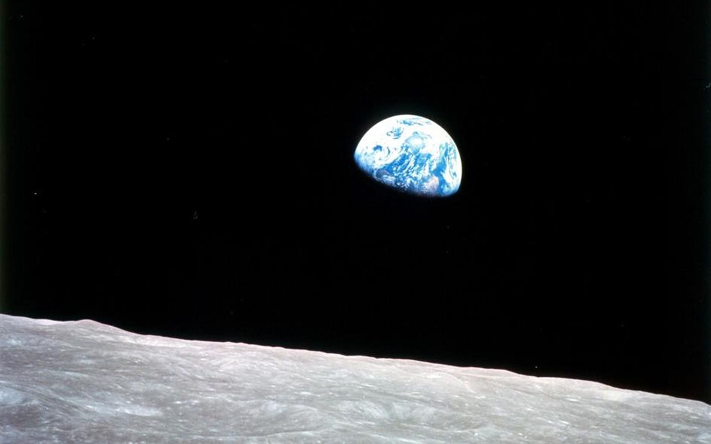

A terrestrial expedition / Moon & Mars
To explore beyond Earth,
we begin here.
Find Earth analogs for specific mission tasks. Compare the evidence. Understand where the analogy ends.
A familiar landscape is not enough.
The right analog depends on what you need to test.
Earthrise / Apollo 8 / 1968
NASA · William Anders Image credits
02 / Mission intent
What are we
preparing for?
Choose a world, then a mission task.
The same task will stay with you on Earth.
Planet images provide context, not site-match evidence. Sources & processing
Choose a mission task
Loading mission definitions…
Search the evaluated dataset. This is not a global census.
Or open the current Explorer03 / Search across Earth
A proving ground for your question.
Mission lens
Loading study data…
Read the map & score legend
Study results
Select a row or marker to inspect its evidence.
- Results appear when the study records load.
Choose a study location to compare its measured features with the mission target. Controls and decoys are validation examples, not discoveries.
04 / Discover the similarities
What makes this place an analog?
05 / Scientific evidence
Analog Test Card
Inspect the full study record, method & sources
A recorded analog match supports a test question. It does not qualify hardware for lunar or Martian operations.